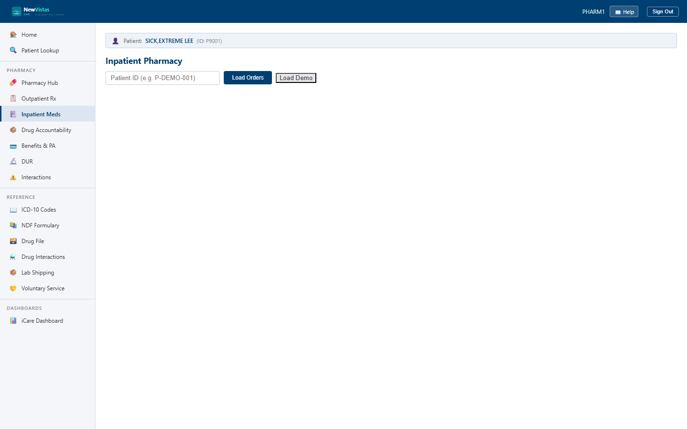

Inpatient Pharmacy
The Inpatient Pharmacy screen is where you review and act on a patient's ward medication orders — unit dose, IV admixture, and large-volume parenterals. It's the equivalent of VistA's Inpatient Medications (PSJ) package, with pharmacist verification, IV additives, scheduled administration times, and BCMA event counts.
Load a patient's orders
- From the sidebar, open Inpatient Pharmacy (or go to
/inpatientpharmacy). - In the Patient ID field, type the patient ID (e.g.
P-DEMO-001). - Click Load Orders.
- The order table loads with a header count and a legend for the type badges: UD Unit Dose, IV IV Admixture, and LVP Large Volume.

What you see
The order list
Each row shows columns for Drug, Type, Status, Priority, Schedule, Dosage, Ward/Bed, Verified, Last Admin, and Provider. Status appears as a colored badge — PENDING, ACTIVE, HOLD, DISCONTINUED, or EXPIRED — and the Verified column reads ✓ RPh or ⚠ Pending.
The detail panel
Clicking a row opens the detail panel: order ID, route, schedule, dosage, ward/bed, start/stop dates, and provider. IV orders also show the IV Solution, volume, and infusion rate, plus an IV Additives table and the Scheduled Administration Times chips. A BCMA Events count ties the order back to bedside administration.
Verify a pending order
- Select a PENDING, unverified order.
- Click ✓ Verify (RPh). The action message confirms "Action 'verify' completed."
- The detail panel now shows Verified by and the date/time, and the row's Verified column shows ✓ RPh.
Manage an active order
- On an ACTIVE or PENDING order, the action bar offers Discontinue and Hold.
- Click Hold to move the order to HOLD; the bar then offers Resume to return it to active.
- Click Discontinue, type a reason in the input row, and click Confirm D/C to stop the order.
- Active or held orders can also be Expired.
- On an active order, click Record Administration to log a dose.
Add an IV additive
- On an active IV or LVP order, click + Additive.
- Enter the Drug name, Dose, and Unit (MG, GM…), and tick Primary additive if it's the base.
- Click Add. The additive appears in the IV Additives table on the order.